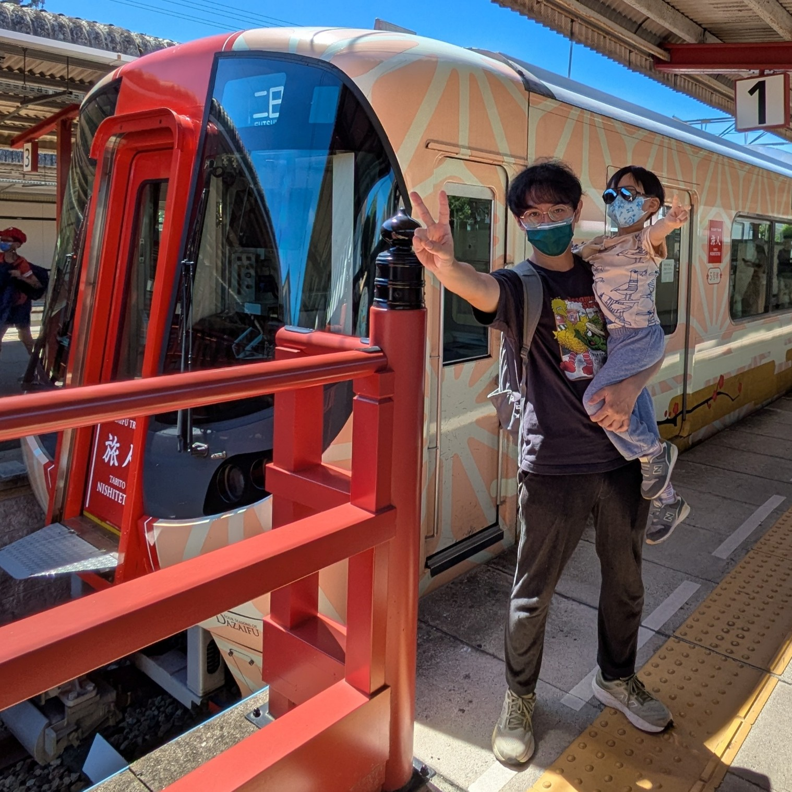
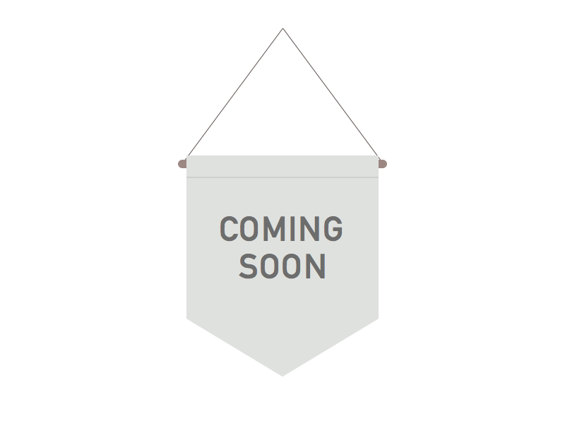
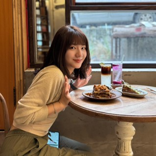
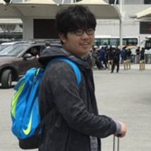

Multimedia & Visual Computing Lab. (多媒體視覺計算實驗室)
The Multimedia and Visual Computing Lab conducts research at the intersection of computer graphics, computer vision, extended reality, and image processing. Our work aims to advance how machines generate, understand, and interact with visual and multimedia content. By combining theoretical foundations with practical system development, we explore innovative solutions for realistic 3D rendering, intelligent visual perception, immersive XR environments, and effective image enhancement algorithms. Our goal is to push the boundaries of visual computing technologies and enable new forms of digital experiences and interaction.
Highlights of our recent projects:

Research Group
Faculty
 |
吳昱霆 助理教授 |
Graduate Students
 |
 |
 |
||
Undergraduate Students
徐婕庭 B3
林昶叡 B3
施沛緹 B3
吳欣霏 B3
Alumni
Graduate student
| Year | Name | Thesis | Special |
|---|---|---|---|
| 2025 | 王紘毅 | Preserving Photographic Defocus in Stylized Image Synthesis | CGF paper |
| 2025 | 周玠妘 | A VR System for Ink Brush Simulation with Paper Absorption and Stroke Diffusion | |
| 2025 | 劉育雯 | 360-Degree Panorama Completion using Semantic Layout Outpainting | JISE paper |
| 2024 | 曾念馨 | A System for Generating 360 Panoramas with Few Unregistered NFoV Images using Mobile Phone Sensor | JISE paper |
| 2024 | 劉勇佑 | Temporal Depth Propagation for Real-Time Video Depth Completion |
Undergraduate student
| Year | Name | Thesis | Special |
|---|---|---|---|
| 2025 | 張智堯, 陳子傑, 李彥廷, 蕭嘉宥 | RGB-Only 3D Scene Reconstruction via Uncertainty-Aware 3D Gaussian SLAM | 2nd place in NTPU CSIE project competition |
| 2024 | 謝羽軒, 吳宸豪, 蔡杰霖, 魏琦蓁, 林佑倫 | Generated Orthographic-like Projection for Panoramic Images | |
| 2023 | 陳佰賢, 陳玥華, 吳昱萱, 余炘璋 | Photo-Realistic Lighting System for AR Applications | 3rd place in NTPU CSIE project competition |
Last Update: Mar. 2026